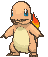
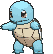

Charmander, Squirtle e Bulbasaur são os clássicos rivais de Kanto. Para evitar disputas de território dentro da Box, eles precisam de espaço pessoal igual, ocupando toda a extensão horizontal da caixa!

